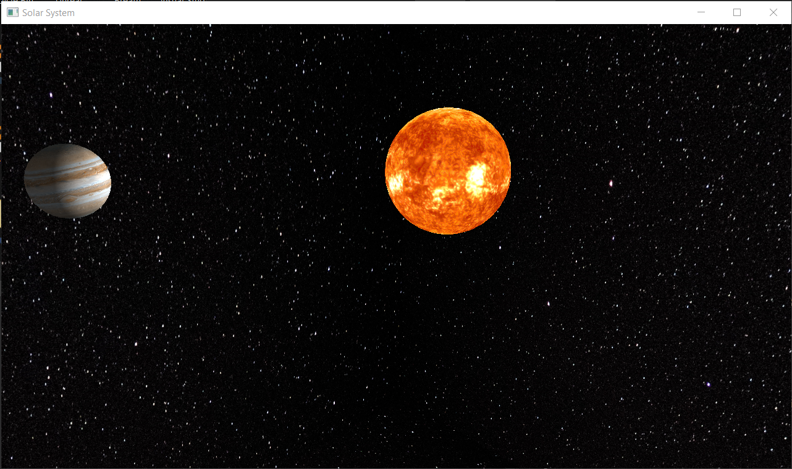

Team Members: Zhenbang (Roger) Yu, Hanze (David) Tan, Jerry Li, Angel Aldaco
The goal of this project was to implement a simulation of Juipter with the Sun. This involves the creation of a skybox for stars in the solar system, the creation of the sun, and the creation of juipter. This inculdes having juipter have rotation around the sun along with supporting self rotation. This also builds on the concept of ray tracing for the light source affecting the planet itself.
We began the project using Homework 3, Ray Tracing as the starting position. This means that the first direct goal was to render a a sphere along with a basic texture. This took a bit of time to run, perhaps due to our machines being a bit behind the times or it being somewhat clunky. We then got the following photo:
We were pretty satisfied with how the light was hitting the planet with global illumination, and the ray tracing algorithms from homework. From that, we got feedback for background being a little unintersting to see giving us the idea to go ahead and start on a background. But we then began to realize that the pre-existing homework was a little clunky if we wanted to move to blender. So we kind of had to rebuild it for the latest verision of blender. This time around we decided to have a background of space to solve for this issue! As it felt relatively apprioprate. Now we had to implement the orbit and physics of the gravitional pull. This meant programming the orbit which was standard for the sun (because it was the center of it! It doesn't have to move!). But then we moved on to the physics of juipter which is dealing with the unit circle equations! Aka using z = radius * cos(curr_angle) and x = radius * sin(curr_angle) as the new position which we just use a standard rotation matrix for. This is what we used for continous animation around the sun and simulating the orbit. Thus giving us the following iamge:
